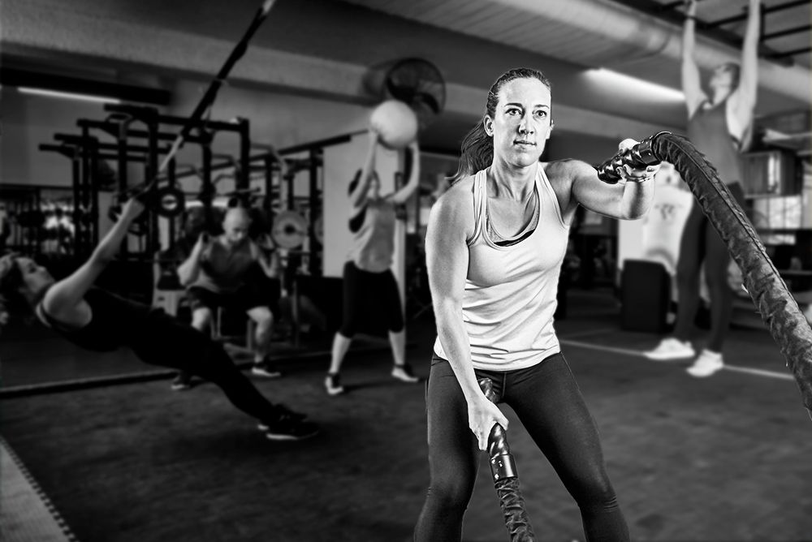
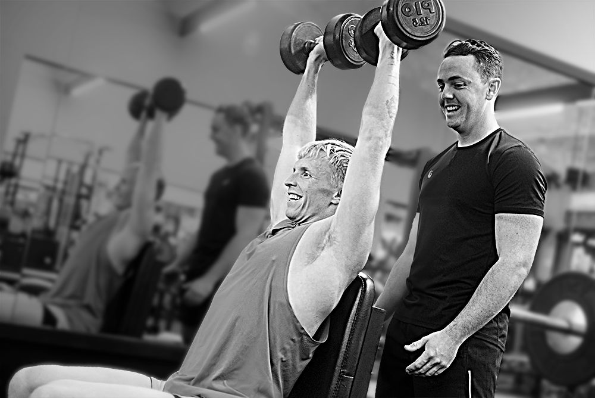
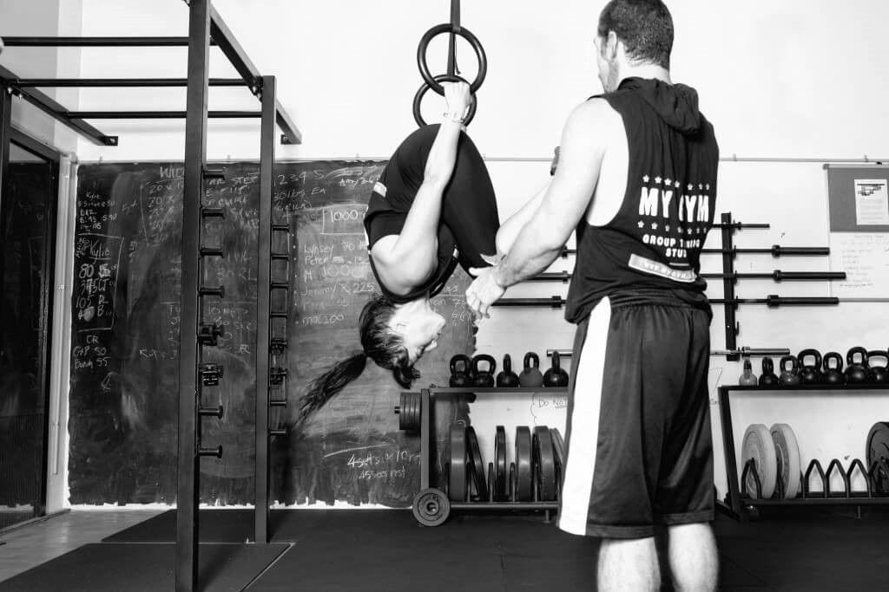
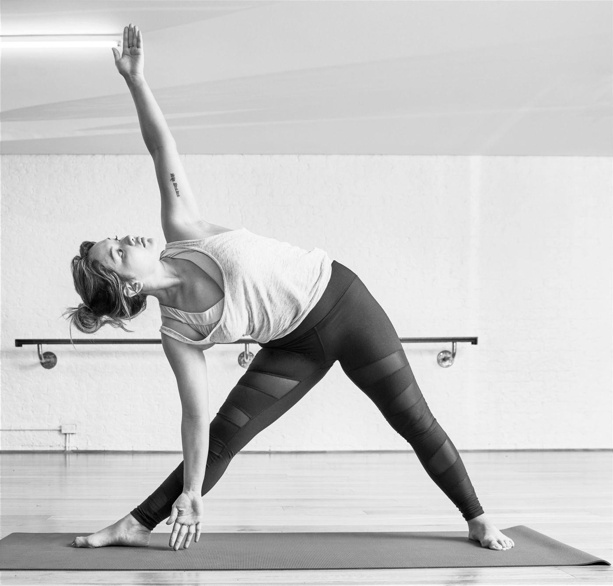
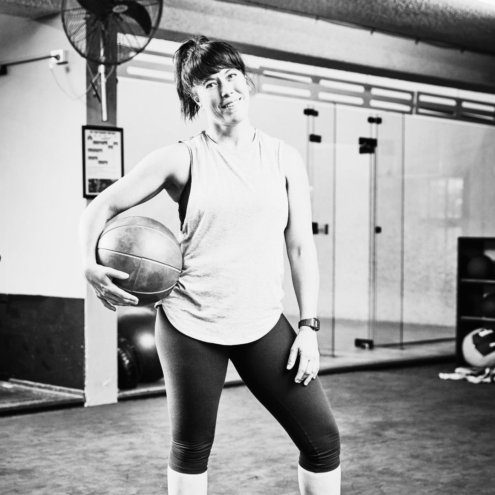
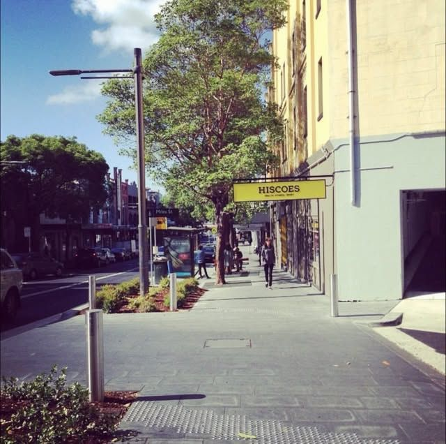
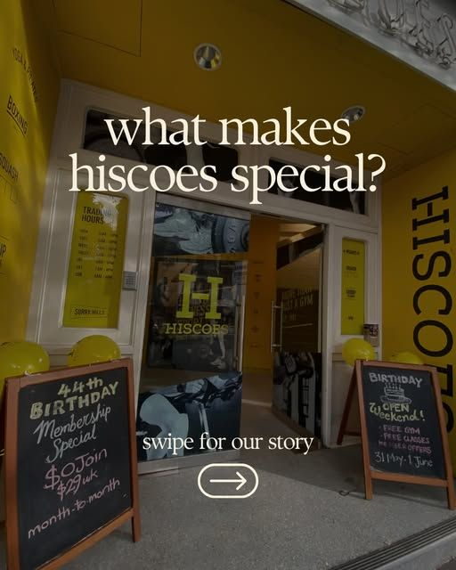

Hiscoes Gym Surry Hills · since 1981
A gym for training, not selfies.
Hiscoes Surry Hills is known for its laid-back vibe, experienced team and spacious gym floor. We’re not a franchise – we’re family-owned and operated and we love what we do.
- 60+group sessions weekly
- 4glass-backed squash courts
- $32a week, Classic membership
- 3 daysfree trial, classes and gym
“Love this gym. I signed up this year for the classes. They have all the normal gym machines, squash courts and morning, evening and weekend classes. It’s not a ‘showy’ gym either, which I love.”Patrick
“Great gym with pretty much all you could want/need. Much bigger than it looks from the outside, it’s very deceiving.”Craig
“Awesome gym, staff, and community!”Ellis
“All the equipment you need, plenty of classes.”Chris
“I’ve absolutely loved my time at Hiscoes gym. The staff are super friendly, the classes are great, and there’s just such a nice vibe at the gym. I would 100% recommend this gym to anyone.”Annabel
Memberships
Simple, flexible and fair
Here at Hiscoes, we are genuine in providing the best value for money gym memberships in Surry Hills. Tick what you want to do and we’ll mark the membership that covers it.
1 month, 3 month, 6 month and 12 month up front payment plans also available. First timers can buy a 2 session personal training taster pack for $79.
Is there a cooling off period?
YES. You have 14 days to make sure that a Hiscoes membership is right for you. If you decide to cancel within the first 14 days you will receive a full refund of any monies paid – no questions asked.
Can I freeze my membership?
YES. You can freeze your membership for any reason for a minimum of 14 days in fortnightly increments to a maximum of 3 months. A $5 per fortnight fee will be charged.
How do I cancel my membership?
Cancellation requests should be made via email to info@hiscoes.com.au. We require a 21 day notice period for all memberships. If your membership has a minimum term requirement we will advise next steps via email.
Classes & programs
Everything we run, in our own words
Choose a shelf, then open any page. The wording is from the current Hiscoes website.
Group trainingClassic classes, max 25 people
Group Training
Classic Classes
Group size maximum 25, general classes for all levels, Hiscoes offers:
BODYPUMP, the original LES MILLS™ barbell class
Freestyle Spin and LES MILLS SPRINT™ a 30-minute High-Intensity Interval Training (HIIT) workout, using an indoor bike to achieve fast results.
Traditional Yoga & Mat Pilates, PLUS HIIT Pilates – a fusion of heart-pumping HIIT using low impact yoga and Pilates moves.
Not into yoga? We also offer STRETCH classes.
Boxing and Kick-boxing: with a range of classes from technique to cardio & Muay Thai style kick-boxing you can unleash your inner fighter.
TEAM TRAINING + REFORMER
Our Team training group sessions are a short, intense style of functional training that gets fast results. The 30 minutes off real effort you put into your workout drives your body to burn calories long after the sessions has ended. Our Small Groups of 12 mean you don’t get lost in the crowd.
Session Types:
- Cardio to get the heart pumping
- Heavy, a full-body strength workout
- Hybrid, a powerful mix of both!
Reformer Pilates:
With a class size maximum of 10 you will always get support from your instructor. Reformer will help build core strength, balance and assist with injury prevention.
FIND OUT MORE
Small Group Personal Training
STRENGTH: Periodised weight-training programs in groups of maximum 8. Expect similar results to personal training.
X-TRAINING: A powerful mix of cardio and weight training for fast results. Think Crossfit minus the ego and injuries.
MOVEMENT & MOBILITY: we work on balance, range of motion and playful bodyweight training.
Enough Talk, Let's Build Something Together
Book Trial
FAQs
Do you offer trial classes or introductory packages?
Yes – everyone is welcome to try a group fitness class. Please book in with reception so we can make sure there is space available.
What do I need to bring to a session?
Nothing! Just turn up with a good attitude. We have everything you need, including a water bubbler so you don’t even need a drink bottle.
Where are your group fitness classes in Surry Hills located?
Most of the classes take place on level 2 of our Surry Hills gym- we have a light-filled main studio, cycle and boxing studio and small group training studio.
Can I bring a friend?
Of course you can! Just allow a few minutes before the session to fill out an exercise safety form.
What if I'm new to exercise or haven't worked out in a while?
Your teacher will be able to give you suitable versions of exercises for your level.
What is the average group class size?
Our large group fitness studio and spin studio have capacity for 25. Our boxing and team training classes are limited to 12. Our small group sessions are limited to 9.
Free Trial
"*" indicates required fields
“I have been doing Small Group Training for a few years now, and it never gets dull! Everyday is a bit different which keeps it interesting. It's also very motivating to have the trainer there and your peers in the group encouraging you along. Great for any age or fitness level. Lynsey, Mac and the team will ask you what your experience is, what you're after, and what you're comfortable doing and then offer exercises and support to help you.”
Craig RHiscoes member
“Small Group Training is a great way to get fit and stay that way in an environment that accepts you for your level of fitness. The small class size is perfect because you get lots of one on one time, whether you're new and need to learn the techniques, or experienced and need pushing to the next level.”
WyattHiscoes member
“I love Small Group Training at Hiscoes because not only can I work out, but I can hang out too.”
NicolaHiscoes member
Become a member Join Now
© 2026 Hiscoes Gym Surry Hills.
Team Training + Reformer PilatesHIIT-style teams and reformer
Results Membership
Team Training + Reformer Pilates
Real goals
Core strength, balance & flexibility
Reformer Pilates
Reformer Pilates offers a more intense and versatile workout than mat pilates, providing greater resistance options and dynamic movements, enhancing strength, flexibility, and overall conditioning.
With emphasis on core strength and mobility through a range of motion, Reformer is a practical and functional addition to any training plan, may help reduce risk of injury and even assist with lowering stress!
And guess what? Reformer is for men too! At Hiscoes you don’t have to be in your twenties wearing mocha-coloured matching activewear to try reformer. It’s for everyone!
Timetable
Group Workouts
Team Training
Group size maximum 12
Hybrid sessions are a powerful mix of cardio and weights for maximum calorie burn. Use equipment like dumbbells, kettlebells, slam balls and bodyweight exercises. Expect a fun, fast and sweaty session in 30mins.
Cardio
For the full cardio burn – come along to this class, which also uses rowing machines, ski ergs and assault bikes to get the heart-pumping and the blood flowing.
Heavy
Your strength-focussed interval session. This time-efficient, full body workout is suitable for all levels and will leave you feeling energised and well on the say toward your goals
Support
Our RESULTS membership includes individualised progams with one of our trainers, and progress checks to keep you on track. You can also meet with our Health Coach for personalised nutrition support.
Motivation
Team Training sessions have a maximum of 12 participants; working out with others keeps you going and pushes you harder = faster results! Every session has a different focus; strength, cardio, or hybrid – workouts change and evolve as you and the group progress = results!
Recover
Our RESULTS membership includes a weekly private booking in our infrared sauna. Infrared sauna has been shown to speed recovery, reduce stress and aid sleep. Plus you can join unlimited Reformer Pilates sessions to stretch, strengthen and tone
What is team training?
Team training sessions have a maximum of 12 and our 3 main types of sessions are
- HYBRID – Couple resistance training with weights and high intensity cardio exercises. Increase aerobic capacity and muscular endurance at the same time!
- CARDIO – Get the heart pumping in this interval workout focusing on increasing aerobic capacity. Using your own bodyweight and cardio machines you will feel out of breath and excited to do more!
- METCON – stand for metabolic conditioning – these sessions typically have longer intervals
I haven't exercised for a while, can I still do team training?
You can join at any level – but please inform your trainer if you have any injuries or pre-exisiting conditions that might effect your workout.
If you have never trained in a gym before, or for a long time, we recommend seeing a trainer for an assessment first, just to be sure (it’s included free in membership).
How does Hiscoes run team training sessions?
The sessions have a very quick mobility warm-up of about 2mins then we launch straight into the workout. The main workout is about 20mins and you might use equipment like kettlebells, dumbbells and medicine balls.
FREE TRIAL
Small Group Personal TrainingStrength-focused groups
Small Group Training
Functional strength training for up to 9 people
Cost-effective
In these dynamic 45 minute sessions, you’ll work closely with an experienced personal trainer to help take your weight training to the next level. Workout in our dedicated studio, on progressive training programs that are personalised to your needs and abilities.
Working out with others keeps you going and pushes you harder = results! We are committed to providing a welcoming environment and training in the same small groups helps with consistency.
Variety
Workouts change and evolve as you and the group progress = keep getting results! Whether your goal is weight loss, muscle gain or you want an intense weight training workout, Group Personal Training is your answer.
Get everything you need for a balanced training regime
For up to 9 people
Our Small Group Training sessions have a maximum of 9 people, so you get similar benefits to personal training but without the hefty price tag. We focus on big full body movements so that you get maximum results in minimum time. With a combination of strength, x-training and flexibility/mobility sessions on our timetable, you get everything you need for a balanced training regime.
See Timetable
Should I do strength or x-training first?
We suggest you try a strength session first as it gives us a chance to get to know you and your fitness level so that we can pitch the session right for you.
How does small group training differ from personal training?
With Small Group Personal Training you can attend as many sessions as you like in one week. You will still follow a program as you would with personal training but there will be other people in the group working on the same/similar plan
What is the typical size of a small group training session?
The typical size of a session is about 6. We allow a maximum of 9 per group.
Personal trainersMeet the team
MEET THE TEAM: Offering one-on-one and partner personal training sessions to our clients, our multi award-winning personal training team offer a wealth of experience for over 35 years! Along with Hiscoes Nutritionist and Exercise Physiologist, Hiscoes team can help you reach your goals.
Exercise Physiologist
Caitlin
Caitlin, our Accredited Exercise Physiologist (AEP), has been a valued member of our team for over ten years. With more than a decade of experience working alongside our community, she brings a wealth of knowledge, dedication, and genuine passion to every client she supports.
She specialises in the prevention and management of chronic diseases and injuries through evidence-based exercise programs. As a university-qualified allied health professional, Caitlin tailors every program to suit your individual goals, health history, and current ability — whether you’re recovering from injury or simply wanting to improve your overall wellbeing.
Caitlin is a true ray of sunshine — warm, encouraging, and deeply caring. She genuinely invests in her clients’ success and wellbeing, creating a supportive environment where you’ll feel confident, motivated, and looked after every step of the way.
Personal Trainer
Lincoln
Lincoln comes from a mixed sporting background, growing up on the Central Coast he was involved in Surf Life Saving from a young age and continues to be in the ocean at every opportunity.
Playing Rugby Union at representative level throughout his junior years & his beloved club the mighty Avoca Beach Sharks, he successfully played first and second grade for several years. Lincoln has had several setbacks with injury, leading him to his PT journey. He is big on functional strength training, HIIT classes, flexibility and having good fun whilst doing it!
Linc believes that fitness is for everyone and not something to be feared, but embraced and loved!
Master Trainer
Mac
The reason why Mac started working in the gym? He doesn’t say so, but we think it’s probably because his mum told him to! Mac is carrying on the family name at Hiscoes, his mother Susan Kingsmill owns and operates the gym which she started with her mother, Windsor Hiscoe in 1981. Practically growing up in the gym it’s not surprising he decided to make it a career.
Mac has worked in gyms and as a personal trainer in the UK, USA and Germany. He has also spent time in Thailand training and fighting Muay Thai kick-boxing. Mac started the first dedicated Group Personal Training Studio in Sydney in 2008, which they have since brought back ton Hiscoes and you can find MyGym Group Training Studio on the 3rd floor. He wouldn’t tell you this either, but what he enjoys most about being a personal trainer is having a captive audience. With a gift for the gab there is never a dull moment training with Mac who can teach you a history lesson and correct squat technique in the same mouthful.
Mac’s key to success for his personal training clients? Giving them the opportunity to succeed. Mac will find something you are good at and make you better at it, he’ll also find something you never thought you could ever do -and help you get there. What would Mac like to see more of? People having more fun in the gym. It doesn’t have to be boring!
Jim
Hiscoes head trainer, Jim O’Donovan has been in the business of personal training for over 35 years!
Jim has been a personal trainer for over 35 years and has coached and trained athletes at the highest international level as a National Coach for the Australian Powerlifting Team – one of only three Level 2 qualified Powerlifting coaches in Australia. A former competitive bodybuilder, Jim is also Certificate IV qualified and coaches squash and weightlifting as well as powerlifting. Jim specialises in rehabilitation, powerlifting and weightlifting.
Jim started personal training because he likes to make people happy – and he found a way he could do it. He believes in educating his clients while helping them to achieve their goals. O’Donovan makes a point of being honest and clear with his clients and delving deep to understand what they really want. He has also has motivated and coached many powerlifters over the years at an elite level. This year marks Jim’s 25th anniversary with Hiscoes. Why does he stay? He loves the family atmosphere.
Clint
Clint is a real powerhouse and loves to share his crazy enthusiasm for fitness and strength with everyone! Clint is a gym all-rounder who enjoys both weight training, cardio training and even acrobatics. Clint’s specialist area is party preparation! Clint is also a vegetarian and can share his knowledge of how to stay lean and build muscle, while maintaining a plant-based diet.
Jen
Jen’ has been a dedicated personal trainer since 2016, with a true passion for helping people move well, feel strong, and enjoy exercise.
Jen specializes in women’s health, offering expert support in prenatal, postnatal, and menopause training. She also works with clients experiencing pelvic floor dysfunction or injury—both men and women.
With experience supporting individuals dealing with knee, shoulder, and hip issues, Jen focuses on guiding her clients toward a pain-free, active lifestyle. Her background includes knowledge of injury prevention as well as rehabilitation before and after surgery.
Jen is passionate about creating a fun training environment where clients feel encouraged and motivated. She believes that everyone can enjoy being active—it’s simply a matter of finding the right approach. When she’s not training clients, she enjoys staying active herself through swimming, running, climbing, and cycling. Her mission is to help others build lasting strength, confidence, and healthy habits that stick—for life.
One-on-one Coaching
Try Personal Training
Working with a personal trainer can be just the thing to support you on your health and fitness journey. Unlike some gyms who have extremely enthusiastic trainers, but with little life experience, Hiscoes trainers get where you’re at.
Whatever your goal, we have a trainer who can help you get there. Specialists in everything from weight loss, muscle gain, boxing, to functional fitness, pre and post-natal and sport-specific training. They can help you recover from, and avoid injury.
Intro Pack $79
How do I get started?
A meeting with a personal trainer is included complimentary with your Hiscoes membership. Book a session for an initial assessment and to discuss your training goals
I think I'm ready what next?
We recommend buying a trial pack of two sessions for $79 to make sure you and your trainer are a good fit for each other.
How much does it cost?
Sessions are $55 per 30mins (Or $60 for our master trainers). You can opt for weekly by direct debit or buy a pack of ten.
Can I train with a friend?
Yes! It’s popular for our members to train with their friends, partners or even in a small group of 3. Just let us know and we’ll get you sorted.
Enquire Now
Class timetable60+ sessions weekly, booked in the app
Group Fitness Timetable
Choose from 60+ group sessions weekly, including: Cycle, Boxing, Yoga & Reformer Pilates. Our team training sessions will challenge you and keep you motivated, and our Small Group Personal training will help you build strength, endurance, and confidence. The choice is yours!
First time logging in?
- Click on the class you want to join
- Use your email address and mobile phone number
- You’ll be prompted to change your password immediately
- Check your email to confirm – we look forward to see your bookings roll in!
DOWLOAD THE APP
Hiscoes ChallengesStrength, fitness & body transformation
Hiscoes Challenges
Strength, Fitness & Body Transformation
Motivation & Results
20 Sessions in 30 Days
Winter Results Challenge
DETAILS
Stay on track in winter and challenge yourself to attend 20 sessions in 30 days in August!
THE CHALLENGE
Make it to 20 sessions in 30 days and win a Hiscoes gift voucher. All sessions on our Results membership are included: 30min Team Training sessions or Reformer Pilates classes. The first 2 members to complete 20 sessions WIN a FREE Body Scan.
HOW TO SIGN UP?
All you need to do is upgrade to our Results membership to take part in the challenge. EASY!
We can’t wait to see your results!
And another perk of being a results member is that you get a private infrared sauna session once a week. Perfect for your recovery with all that extra training!
REGISTER
Strength Challenge
8 Weeks of Periodised weight-training in groups of 6-8, with weekly challenges.
WHY PEOPLE JOIN
Participants in this challenge make significant strength gains over the 8 week program. With 10 weekly strength group sessions to choose from – this flexible training program gets results! You might be striving for your first chin-up, wanting to bench 100kg or simply to feel confident performing compound lifts like squats and deadlifts.
WHAT’S INCLUDED
With beginner and advanced training plans, this program is suitable for people who have never really lifted weights before, or those who have been training for a long time but have plateaued.
START DATE
June 1st 2026
Learn More
Body Transformation
Signature Challenge
Our signature Hiscoes Body Transformation Challenge runs for 6-9 weeks and aims at reducing body fat, and increasing motivation and commitment to exercise
Our body transformation challenge can be truly life-changing. With commitment to the program you can expect to lose fat, gain muscle, change your lifestyle and make new friends!
With a tailored weight training program and nutritional education, as well as weekly group training sessions and support network you are guaranteed success!
NEXT START DATE:
September 1st 9 week Body Transformation
LEARN MORE
Will I be fit enough?
Our programs cater for all levels. Our HIIT classes have a maximum of 12 people so it’s easy for our trainers to tailor the workouts for you. Both our Strength and Body Transformation Challenges include Beginner and Intermediate+ programming.
Which Challenge should I do?
Are you ready to start now? Join our HIIT 20 session challenge in April. It’s the easiest to commit to because it only goes for 30 days. If you really want to lose weight and change your lifestyle then go for our 6 Week Shred. Our Strength program does just what it says on the tin – if you want to get stronger this one’s for you!
Can I try a session first?
Absolutely! Ask at reception and we’ll book you in for a free trial of our group sessions. Or you can speak wit hour nutritionist if you feel like that’s where you struggle most.
How do I sign up?
Enquire below and we’ll get in touch to get you going!
Register Interest
8 Week Strength Program8 week challenge
8 WEEK STRENGTH TRAINING PROGRAM
Our 8 week Strength Program is designed to help you to achieve the strength you have always wanted. This program will cover pre and post program testing focusing on technical questions and common sticking points to maximize your results. Whether you’re a beginner or experienced, our expert program will help you become the strongest version of yourself in just 8 weeks.
Challenge Starts Monday 1 June
INFORMATION SESSION
Motivation + Results
The Challenge
Details:
Our 8-week Small Group Training Strength Challenge includes a periodised weight-training program run in groups of a maximum of 8-10 so you get the personal attention you need. If you’ve been training for a long time and you’ve plateaued OR if you your just starting out on your weight training journey and you need help then this program is for you!
Why people join
This program GETS RESULTS. If you want to see significant strength increases – then you should join. We see results year in and year out.
What’s included
- Unlimited Small Group Personal Training Sessions
- Weight-training program that’s tailored around your needs
- Weekly challenges to help you stay motivated and assist with recovery
- A chance to get your name on the MyGym Shield of Fame!
Weekly Schedule
Find out More
How many sessions will I need to attend per week?
We recommend attending 3 times per week for best results.
Will I be strong enough?
Yes! We will all be training at the same time, but the program will be tailored to where you’re at.
You simply need to upgrade to a Small Group Training Membership to join. Total cost is 79/ week for unlimited sessions.
Register your interest
Shred Challenge9 week body transformation
9 Week Challenge
Body Transformation Challenge
Start Date SAT 29TH August, 2026
Get Results!
Limited to 25 spaces - join now
Nutrition
Learn how to plan meals and track macros to assist with fat-loss and building lean muscle. Change your body composition and build lasting habits. A consult with our nutritionist and before and after body scans are included in the program to set your personal goals.
Training
Points-based tracking system for optimum training results and accountability. Guided weight-training program, with a weekly personal training session and a balanced weekly plan will ensure you meet your goals without injury.
Results
Weekly challenge group session with like-minded challengers, challenge guide, plus group support for macro-tracking means you will stay motivated for the whole 9 weeks and get the results you want!
Testimonial
Taylor
My initial goal was to get my abs back, but as the challenge went on it became much more than that. I wanted my determination, fitness, self control and confidence back. After I lost my mum, I fell into a comfort eating spiral and I found I had lost all of those things along with my abs.
The challenge was actually fun. I’m not going to lie, the first three weeks were really tough – physically and mentally. I felt like giving up in my first HIIT session and I really struggled with the food for the first two weeks as I fully embraced the diet and took responsibility for the food I consumed.
After the initial shock to the system, I found I enjoyed the food and I understood that sticking to the food meant I could train harder and I saw I was getting fitter. My body started to change as well, which spurred me on to stick with it.
The team aspect to the challenge also helped with the challenge, the weekly challenge sessions were awesome as I got to meet a cool group of people who were also going through the same thing.
I’m so happy with my results. My body fat percentage went from 40.2% to 34%. I lost 7.5kg in body weight, 7.6kg in body fat mass. The physical changes surprised me the most, my body started to change quickly, week by week I noticed changes, which was really encouraging and motivating through the challenge.
If you are reading this and are considering the challenge or a change, please do. You will be challenged, you will consider giving up, but if you follow the program, stick with the food and listen to the advice the trainers give you, you will see results.
Graeme
At the beginning of the challenge that goal was simply to feel confident wearing obscenely tiny gold shorts in front of hundreds of thousands of people in the parade today. A goal that in hindsight feels a little superficial.
In reality I have achieved something a lot more valuable which is a much better understanding of how small changes can make massive impacts to my health and fitness. I am a lot more aware now of not only the nutritional value of what I eat is but also how to swap out foods and manage portions in a way that helps rather than hinders my goals.
I can now confidently say that I am in the best shape of my life, which at 36 is a lot more important to me than tiny gold shorts. 🙂
Transformation Begins
August 29, 2026
Next Steps!
- Register your details below
- Pay the $150 Registration fee
- Pick your weekly Personal Training Session or Upgrade to Small Group Training
- Choose your challenge group time – 6pm Wed or 8am or 10.30am Sat
Get Started
Will I bit fit enough?
All levels of fitness can join this Challenge. Your trainer will personalise the program to suit your goals.
How do I sign up for the Challenge?
Visit Hiscoes reception to pay the joining fee and pick your weekly personal training session.
When are the group sessions?
Wednesday 6.00pm, or Saturday 8am or 10.30am. We recommend booking in early as spaces will fill up. Max 12 per group.
Why do I need to pay a joining fee?
The joining fee covers your weekly group session, before and after body scans, challenge guide & program and meeting with our nutritionist. PLUS Challenge participants are offered a 2-pack of Infrared sauna sessions to aid recovery.
Do I need to do a personal training session?
Yes! To ensure results you need to have a weekly session tailored to you! If you find it difficult to commit to the same time each week then small group training is an alternative.
28-Day Reset, Perimenopause programFeel like yourself again
Perimenopause program
28 DAY RESET – starts August 1, 2026
Feel like yourself again!
Strength Training Program
This program is specifically designed for females in their forties. We will teach you the correct method of strength training in order to improve bone density, pelvic floor function, sleep quality, joint pain, moods and energy levels.
Group Support & Motivation
Our group sessions are fun and engaging and are safe space for open communication! You will walk away with renewed energy and motivation.
Well-being Challenges
Each week we challenge you to incorporate new habits into your routine, giving you the opportunity to re-evaluate your health and fitness plan. Our challenges focus on exercise, nutrition, sleep and stress management.
Feel calm, strong and in control again
28 Day Reset
What’s included in the program?
- Especially Designed Weight-Training Program
- Nutrition Advice
- Weekly group sessions for support and motivation
- 4 personal training sessions
- Habit builder and tracker
Contact us now
How much does the program cost?
A one off payment of $300 includes your program, personal training and group training sessions
Sat 8am. Groups will be a min of 4 to max 8 participants
When do we start the 28 Day reset?
We start on Mon August 4th!
How do I sign-up?
See reception to sign up for our 28 Program. Or email us below with questions
Health coach & nutritionWhat is a health coach?
What is a Health Coach?
A health coach helps people reach their goals and learn the tools to maintain them. Meeting one-on-one gives you accountability and guidance navigating your personal challenges. You’ll receive practical information specific to your needs and support in developing balanced nutrition that fits in with your lifestyle.
KEY ELEMENTS:
Basic understanding of energy balance
Your goals
Your emotional and psychological relationship with food
Meet our Health Coach
Giselle
Giselle has been a health coach for over 6 years. She has extensive experience in the health and nutrition industry and previously volunteered as a counsellor for Lifeline.
Qualifications:
- Bachelor of Health Science (Food & Nutrition) (CSU)
- B.A. (Psychology & Sociology) (USYD)
- Diploma of Professional Counselling (A.I.P.C)
An initial assessment with our Health Coach is included as part of your Hiscoes membership. To make an appointment call the gym on 9699 9222 or fill in the contact form below.
Exercise PhysiologyOur AEP can help you
Our AEP can help you:
- manage persisting pain caused by injury or overuse
- improve your heart health
- exercise safely to benefit your diabetes
- reduce risk of pre-diabetes from progressing to full diabetes
- assist with your recovery following cancer treatment
- manage arthritis and osteoperosis
- use exercise to help with mental health conditions
Exercise Physiology
Meet our Exercise Physiologist
In addition to our incredibly experienced personal training team, we also have a fully qualified exercise physiologist on staff. Caitlin Stanistreet, our Accredited Exercise Physiologist (AEP) specialises in the delivery of exercise for the prevention and management of chronic diseases and injuries.
So What is Exercise Physiology?
Accredited Exercise Physiologists specialise in preventing or managing acute, sub- acute or chronic disease or injury. AEPs can help with restoring one’s optimal physical function, health or wellness. Interventions are exercise-based and include health and physical activity education, advice and support and lifestyle modification with a strong focus on achieving behavioural change.
To make an appointment call the gym on 9699 9222 or fill in the contact form below.
Infrared saunaSingle session $25, 5-pack $95
Recovery
Detoxify, relieve pain, increase oxygen & blood circulation
Infra-red Sauna
Infrared light has been shown to promote cell autophagy, a critical process our body undergoes to ensure cells are renewed and restored or killed off. Infrared all keeps our circulation up whilst resting the muscles after a workout to help clear out lactic acid bring vital nutrients and enzymes to the muscle for repair
Reduce Stress
Infrared sauna activates our parasympathetic nervous system which is in charge of making us calm before bed and set’s us up for sleep, couple this with in-cabin colour therapy using the energy of colour to assist the body with its own natural ability to heal, energise and soothe.
Burn Calories
Infrared Sauna get’s the body working…hard. During higher temperature sessions, heart rate can reach 150bpm. Sustaining this level of work requires a calorie burn and commitment!
Ready to experience the benefits? Single session $25
Why is infrared sauna good for me?
How does it work?
Infrared is a safe wavelength of light (or energy) which we feel as heat. Infrared works by heating the body directly, warming us safely to create a cardiovascular workout on the body whilst removing heavy metals and toxins. Infrared is different to steam or hot rocks sauna in that it heats the body at a lower more comfortable temperature.
RATES
Member Casual
$ 25
Per visitBOOK NOW
5 - Pack
$ 95
5 sessionsBUY NOW
Weekly Membership
10 sessions/mthJOIN NOW
What is infrared therapy? And how is it different to traditional saunas?
Infrared heat therapy is the process of infrared light penetrating several inches into the body’s deep tissue and creating heat, resulting in a whole-body hyperthermia to make you sweat. Traditional saunas heat the air around you to encourage your body to sweat out toxins however usually this just leaves people uncomfortable and struggling to breathe in the stuffy conditions! With an infrared sauna the gentle heat will radiate to the core of your body.
Can I wear clothes in the sauna?
Yes, absolutely! As our sauna is in a shared space you will be more comfortable clothed. We suggest swimwear or clean gym-wear. The infrared heat technology will not depend on what you’re wearing, and you will still feel all the same benefits.
How should I prepare for my sauna?
To best enjoy your Infra-Red Sauna remember to properly hydrate before. Please bring your WATER BOTTLE. Hydration is very important.
There’s no need to bring anything else with you. Please arrive on time as there will be bookings after you. Your time in the sauna will run for 35 mins.
Can I bring my device or phone?
You can bring your phone or device and there is a bluetooth option if you want to listen to a podcast or some relaxing music. We recommend you leave it outside the sauna as it will warm up.
Can anyone use the sauna?
Please consult your doctor before using the infrared sauna if you suffer from any of the following
– Cardiovascular issues
– Obesity
– Diabetes or other chronic conditions
– Haemophilia
– Allergy to natural wood oils/resins
Children and pregnant women should avoid using the infrared sauna. Hiscoes also advises against using the sauna under the influence of drugs, alcohol or strong medication.
Is the booking for one person only?
Yes our sauna is only suitable for single person bookings
Play squashCourts, coaching and players
Play Squash
BOOK A COURT AND GET YOUR SECOND BOOKING 50% OFF!
Free for members!
Book a Court
Play
Hiscoes has 4 glass-backed squash-courts, that can be booked casually or get a discount for permanent weekly hire. Off-Peak court hire 6am-5.45pm Mon-Thurs and all day Fri, Sat, Sun. Peak times 5.45pm-8.45pm Mon – Thurs.
BOOK A COURT
Get Coaching
We offer small group coaching for beginners Tuesday evenings and Saturday mornings + development squad coaching Mondays and Saturdays. For individual coaching connect with our coaches who are experienced at all levels.
Meet Players
Intermediate to advanced players should come along to our club practice + round robins on Mondays from 8pm or Saturdays from midday. Free for Hiscoes Members $25 non-members
BOOK CLUB PRACTICE ROUND ROBIN
Book a court
SQUASH LESSONS
All Levels
Offering over 25 years of squash coaching experience in Surry Hills. Hiscoes has squash coaching options for all levels. Free group coaching for beginners is included in Hiscoes membership! Beginner and intermediate training squads are held on Monday nights and Saturday mornings
Meet our coaches
I've never played before, what should I do?
You should come along to our beginner training sessions on either 5.45pm Tuesdays, or 11am on Saturdays.
I've played a fair bit of squash but I'm new to the area
Come along to our club practice Monday nights from 8pm or Saturday afternoons from midday and meet some players of a similar level.
I am an experienced squash player keen to join a team
Hiscoes has teams of various level who play in the Sydney Pennant competition.
I've just started but I'm keen to compete
Come along to our Friday night Round Robin to get in some gameplay practice.
Can I book a court as a non-member?
Yes non-members are welcome to book squash courts on a casual basis
Do you I need to bring my own equipment?
No you don’t need to bring your own equipment to play squash at Hiscoes, we have racquets and balls for hire and sale.
What are your squash court open hours?
We are open from 6am-10pm Mon – Thursday. Our peak ours are 5.45pm-8pm, off-peak rates apply at all other times and Friday, Saturday, Sunday.
Enquire about squash
Court bookingsHow to book a court
Squash Courts
Make a booking
To make a booking, click on the link below, or give us a call on 9699 9222. Payment must be made at time of booking.
- Cancellations may be made with 24hours notice.
- For cancellations outside 24hours the full amount will be credited for future bookings.
- Cancellations within 24 hours, forfeit the full fee.
Off-Peak Bookings
6am – 5.45pm + 8.45pm-10pm Mon – Thurs | All day Fri, Sat, Sun
MEMBERS
NON-MEMBERS
Free
$54 per court
Peak Bookings
Monday – Thurs 5.45pm – 8pm
45min bookings
$20 per court
($10 per player)
($27 per player)
Permanent Hire
20% discount for weekly bookings – as at reception
Squads & round robinsOptions for all levels
Squads and Round Robins
Hiscoes has squash options for all levels. Free group coaching for beginners is included in Hiscoes membership! We can get you match ready and started with some friendly in-house games before transitioning to serious competition.
Beginner Squash Squad
Start your squash journey today! Suitable for people who are new to the game. The class covers all your basic techniques and practices shots through feeding drills. Racquets and balls provided. Included FREE for Hiscoes members.
Beginner Group Coaching:
- Saturdays, 11am
- Tuesdays, 5.45pm
Members
FREE
Non-members
$27 per session
Squash Development Squad
Squad Training
Develop your game! Suitable for people that have played before and want to improve their skills. The class covers technique and gameplay through feeding, drills and conditioned games. Equipment provided.
Groups of 4:
- Mondays 7.15pm
- Tuesdays 6.30pm
$10 per session
CLUB PRACTICE
Round Robin
Players from our Sydney Pennant Teams and those of a similar level play 3 or 4 matches against different opponents. Our coach is on hand arrange the matches.
Mondays 8-10pm | Saturdays 12-2pm
$27
BOOK MONDAYSBOOK SATURDAYS
Fri Night Round Robin
Beginner
Players come down looking to get started with friendly competition and play 3 or 4 matches against different opponents. Our coach is on hand arrange the matches and players play a quick best of 3 set match.
Email: annasquashcoaching@gmail.com with questions
Squash coachesOne-on-one and small group coaching
Offering one-on-one and small group squash coaching to all levels, our squash coaches offer a wealth of experience for over 25 years! Find out the passions and experience behind the Surry Hills based squash coaching team.
All Levels + Advanced Coaching
Darcy
Darcy Evans:
- Ex Professional Squash Player
- 10+ years of coaching experience
- Qualified Physiotherapist
- Bachelor’s of Exercise and Sport Science (BExSSc, M.Physio)
Darcy has experience coaching players of all ages!
CONTACT:
darcybishnuevans@gmail.com
Leigh
Leigh Sands:
- 15+ years coaching experience
- Level 2 Squash coach
- Current Division 1 pennant player
- Bachelor of Applied Sciences (Physics),
- Passionate about bringing new people to squash
Leigh has experience coaching players of all ages and runs beginner tournaments several times a year.
leigh.squash@gmail.com
Junior squashFree coaching, 8–16 years
FREE SQUASH COACHING
8-16 years
Tuesdays 4pm
Term 1, 2026 $150
PLAY SQUASH
Kids & Teens
Junior Squad
Squash coaching for 8 to 16 year-olds. Have fun, try a new indoor sport! All equipment provided –
START DATE: Tuesday Feb 3, 2026
Please fill out the form below with CHILD’S NAME & AGE and parent contact details to register your interest.
NB: Parents of 8-10 year-olds will be expected to drop off and pick up from the courts.
Squash events calendarEvents for all levels
Squash Events Calendar 2026
For all levels - come to Hiscoes and join one of our events or jump into the Sydney Pennant.
Intermediate Timed event
SportyHQ: 600-999
Sun 21 JuneSIGN UP
Wed night internal Comp
6 weeks
Wed 24 June 7.15pm
Stellar Hiscoes Open
Fri 26th - 28th JulySIGN UP
Sydney Spring Pennant
Aug - November
Entries Close:
Beginner Tournament
19 September
Hiscoes Club Open
Nov 20 and 22
3-day trialWhat’s included
Find out how we’ve been keeping Surry Hills fit since 1981!
Gym & Class Access
*conditions apply
TRADE IN OFFER
Join on your first visit
Your Trial includes all classic classes and full gym access.*
If you like what you see, join Hiscoes on the first day of your trial –
You will save $79 off the join fee! AND get your first 2 weeks free
You get full member benefits to help you succeed and have fun! Meet a trainer for a personalised workout plan; get free squash court hire and beginner coaching sessions; see our nutritionist to clarify any diet questions you have and access our special member-only classes.
Spring Special - our best rate - half the commitment
Gym
Full free weight training area, including lifting platforms – for the trained lifter. Pin-loaded weights machines for specific muscle groups. Cardio machines including treadmills, bikes, ellipticals, rowing machines and more! Plus functional training area and dedicated abs/stretch zone.
Classes
Full range of group fitness classes. Including LesMills BodyPump and Sprint. Cycle and Boxing studio, yoga, mat Pilates plus our signature Team Training HIIT Style workouts. Please let us know if you’d like to try a class on your free visit so we can book you a spot.
Amenities
We have garage parking (accessed from Miles lane) Free sweat towels and lockers available for use. Please bring a water bottle and your own towel if showering afterwards. Our bathrooms are equipped with hairdryers.
Can I try reformer pilates on a free pass?
Only our classic classes and gym access is included for a trial visit
Nothing! We have sweat towels and a water bubbler for you to use. We also have yoga mats and boxing gloves if you want to try a class.
Can I book a squash court for my free trial?
Squash is not included in our free trial. You can book a court casually from our squash booking page.
I am under 18, can I do a free trial visit?
Under 18s must see a trainer before training at Hiscoes. This requires a full membership.
“Such a welcoming gym. I’ve never been able to get motivated to go to the gym regularly but having Jim as my personal trainer has really changed that for me. I now enjoy going and I love the way a feel and look.”
MarlouHiscoes member
“Great gym with even better atmosphere. Has everything you need in terms of equipment and they offer classes as well. All you ever want out of a gym!”
TimHiscoes member
“This is a great old school relaxed gym. Has everything you need, I had to cancel my membership and they were fantastic about it. Don't go to commercial gyms support local businesses like Hiscoes they are Great!”
BradHiscoes member
Refer a friendReceive a $50 voucher
Refer a friend and receive a $50 voucher!
Simply fill out the form below and one of our team will email a free trial pass to your friend. If they decide to join you'll receive a $50 voucher to spend in the gym!
Your details
Get started
Reasons to refer a friend:
Don’t keep Hiscoes all to yourself! Bring a friend with you and not only will you have a training partner but you’ll also receive a gift from us!
A training partner makes workouts more fun and you’re more likely to stay motivated! Start spreading the word about how great Hiscoes is and let’s fill the gym with more people we like.
You're always welcome at Hiscoes
We’re known as Surry Hills most supportive gym. We give you the means, motivation and know-how to get you fit. We’re not a franchise – we’re family-owned and operated and we love what we do – helping you succeed. Here at Hiscoes, we are genuine in providing the most value for money gym in Surry Hills, with simple and flexible gym membership options. That’s why Surry Hills has been exercising with us for over 35 years. Drop in – we’d love to show you around.
Gym FAQsMemberships, safety, privacy
GYM FAQs
Hiscoes spacious gym is the perfect place for you to train!
We offer simple, flexible membership plans and transparent cancellation processes when you are ready to move on.
Not a member yet? Join Hiscoes Gym
Gym Safety
In addition to our daily cleaning schedule we have added the following protocols:
– Added regular cleaning of high-touch areas throughout the day – Added hand sanitiser stations to gym entries and throughout the gym – Added cleaning stations throughout the gym so members can wipe equipment before and after use – Please do not attend the gym if you are unwell, get tested and go home
Memberships
Can I put my membership on hold? Yes you can. Please email freeze requests to info@hiscoes.com.au.
How do I cancel my membership? Please email cancellation requests to info@hiscoes.com.au. There is a 21-day notice period for cancellations.
Privacy Policy
Join nowSpring Special
Spring Special
12-month price,
6 month minimum
ends October 31st
ContactSay hi
Contact Us
Visit us at 525 Crown Street, Surry Hills NSW 2010 Email enquiries to info@hiscoes.com.au or call us on (02) 9699 9222
Say hi
Welcome 7 days
Opening Hours
- Mon-Thurs 6am-10pm
- Fri 6am-9pm
- Sat 7am-7pm
- Sun 8am-7pm
Public Holidays
- King’s Birthday June 8 OPEN 8am-7pm
- Labour Day Mon October 5 OPEN 8am-7pm
- Christmas Day CLOSED
- Boxing Day CLOSED
- Monday December OPEN 8am-7pm
- Friday January 1st 2027 CLOSED
Guest waiverFor guests
This page is a form on the current site.
Squash at Hiscoes
4 glass-backed courts
Free for members at most times, and non-members are welcome to book on a casual basis. We have racquets and balls for hire and sale.
Where should I start?
Open 6am–10pm Mon–Thursday. Peak hours are 5.45pm–8pm; off-peak rates apply at all other times and Friday, Saturday, Sunday. Court bookings available 6am–10pm weekdays, 7am–8pm Saturdays and 8am–6pm Sundays.
Go to court bookingGym facilities
Much bigger than it looks





- Spacious free weights area
- Group training studios – incl. yoga, cycle, HIIT and boxing
- Lifting platforms
- Pin-loaded machine weights
- Dedicated stretch + cardio areas
- Reformer Pilates
- 4 glass-backed squash courts
- Member lounge + pro-shop
- Garage parking (from Miles Lane)
- Complimentary sweat towels
3-day trial
Find out how we’ve been keeping Surry Hills fit since 1981
Your trial includes all classic classes and full gym access.* If you like what you see, join Hiscoes on the first day of your trial – you will save $79 off the join fee and get your first 2 weeks free.
*Conditions apply. Only classic classes and gym access are included for a trial visit. Squash is not included in the free trial. Under 18s must see a trainer before training at Hiscoes, which requires a full membership.
Welcome 7 days
Opening hours
- Mon – Thurs
- 6am – 10pm
- Fri
- 6am – 9pm
- Sat
- 7am – 7pm
- Sun
- 8am – 7pm
Public holidays
- King’s Birthday June 8 – OPEN 8am–7pm
- Labour Day Mon October 5 – OPEN 8am–7pm
- Christmas Day – CLOSED
- Boxing Day – CLOSED
- Monday December – OPEN 8am–7pm
- Friday January 1st 2027 – CLOSED
You’re always welcome at Hiscoes
We’re known as Surry Hills most supportive gym. We give you the means, motivation and know-how to get you fit.
- info@hiscoes.com.au
- Call
- (02) 9699 9222
